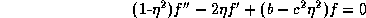

News
News
| Getting Started | Documentation | Glish | Learn More | Programming | Contact Us |
|
| VERSIONID |
News
|
PagedArray
palette
Paley-Wiener theorem
panel
parallactic angle
PCX
Perl
persistence
phased array
phaseless reconstruction
phase tracking center
pixel
pixel co-ordinate
pointer
pointing error
points per beam
point spread function
polarization
polymorphism
position angle
PostScript
precession
primary beam
primary beam correction
primary reflector
prime focus
principal solution
prolate spheroidal wave function
protocol
proxy object
Prussian helmet CLEAN
pseudo-color display
pseudo-continuum data
PSF
In AIPS++, a Lattice for arrays which are both persistent and possibly larger than available memory. The PagedArray uses the Table for its I/O. The PagedArray is used by the Image.
In computer graphics, an ordered range of available elements, usually colors.
The classical Paley-Wiener theorem says that a square-integrable complex-valued function , defined over the real line, can be extended off the real line as an entire function of exponential type a if and only if its Fourier transform f(x) is identically zero for |x|>a, --- i.e., if and only if f is band-limited to [-a,a]. (For a derivation, see H. Dym and H. P. McKean, Fourier Series and Integrals, Academic Press, 1972.)
The Shannon series is a means of extending to the entire complex plane C. The extension of the Paley-Wiener theorem to the case of generalized functions (to tempered distributions) is called the Paley-Wiener-Schwartz theorem.
The Fourier transform of a function f with support in a given n-dimensional convex compact set K can be analytically extended to all of . Growth properties on which are sufficient in order for the converse to hold are given by K. T. Smith, D. C. Solomon, and S. L. Wagner Practical and mathematical aspects of the problem of reconstructing objects from radiographs, Bull. Amer. Math. Soc., 83 (1977) 1227-1270: in addition to the classical version of the multi-dimensional Paley-Wiener theorem, for rectangular K, they give versions with tighter growth bounds, and for arbitrary convex K. Smith et al. use the Paley-Wiener theorems to establish indeterminacy theorems for tomographic reconstruction. Their results are also relevant to Fourier synthesis, because of the connection between the two-dimensional Fourier transform and the one-dimensional Radon transform. The Paley-Wiener theorems have also been used in establishing results on the problem of phaseless reconstruction and in proving the convergence of constrained Gerchberg-Saxton-type deconvolution algorithms (see A. Lent and H. Tuy, An iterative method for the extrapolation of band-limited functions, J. Math. Anal. Appl., 83 (1981) 554-565).
A segment of the reflecting surface of an antenna that is independently formed with its supporting rib structure, and is mounted on the backup structure as a unit.
Panels are mounted to the backup structure on screws so that their relative positions can be optimized. This allows the antenna gain and effective area to be maximized when an antenna is commissioned. It also allows the panels to be realigned later, either to compensate for changes in the antenna structure or to refine the initial adjustment using improved surveying techniques (such as holography).
In advanced antenna designs, the panels are mounted on calibrated actuators, so that their alignment may be adjusted continually under remote control. This permits active correction for modeled, or measured, deformations of the reflecting surface during an astronomical observation. In the GBT, such an active surface will be used to maximize the antenna gain and minimize pointing errors, especially at the higher observing frequencies.
In older antennas, the reflecting surface itself was often manufactured independently of the supporting ribs. In this case the segments of that surface alone may be called plates; the term panel then applies to the combination of a plate and the segment of rib structure to which it was joined before being mounted on the backup structure.
The angle between the hour circle through a celestial object and the vertical circle through the object, at the time of an observation.
Note that the parallactic angle
also describes the orientation of a fixed direction on a telescope,
such as the direction of sensitivity of a linearly-polarized receptor
on an antenna, relative to celestial co-ordinates. If an antenna is
on an equatorial mount, the parallactic angle of any receptor will not
change relative to any celestial object that it is tracking (unless
the receptor is deliberately rotated during the observation). If an
antenna is on an altitude-azimuth mount, the parallactic angle
p for an observation at hour angle h of a source
at declination  is given by
is given by
An image file format, capable of representing 1, 4, 8 or 24 bits per pixel, originally introduced by ZSoft. Mild compression is achieved by storing adjacent replicated pixels as an intensity with a repeat count.
Practical Extraction and Report Language, developed by Larry Wall. Perl is an interpreted language optimized for scanning arbitrary text files, extracting information from those files, and printing reports based on that information. According to its author, the language was intended to be easy to use, efficient, and complete, rather than elegant. It embodies powerful operations such as regular expression substitution, and an expression syntax that corresponds quite closely to that in C. It also supports dynamically scoped variables and functions, nested data structures and exception handling. Although optimized for scanning text, Perl can also deal with binary data.
For details, consult the Perl Home Page at http://www.perl.com/perl/.
1. In programming. a property of a language whereby created objects and variables continue to exist on some storage medium, normally disk, and retain their values between runs of the program.
2. In hardware, the length of time that a phosphor dot on the computer screen will remain illuminated after it has been energized by the electron beam. Long-persistence phosphors reduce flicker, but generate ghost-like images that linger for a fraction of a second.
An array of many antenna elements whose output voltages are combined in a specific phase (or delay) relationship to optimize beam formation. A technique often used to achieve beam steering or tracking with fixed array elements such as dipole antennas. Also used to combine signals from steerable elements of an interferometric array in order to use that array as a single, sensitive element in a VLBI experiment.
The reconstruction of an image f (see image reconstruction) from knowledge of (only) the magnitude || of the Fourier transform of f (and usually from only partial knowledge of ||). Phaseless reconstruction has been considered for the NRAO's proposed millimeter wave interferometer array [T. J. Cornwell, Imaging of weak sources with compact arrays, NRAO Millimeter Array Memo. No. 12]. Results on phaseless reconstruction appear in the JOSA Feature Issue on Signal Recovery [J. Opt. Soc. Am., 73 No. 11 (Nov. 1983)]. Also see the papers by J. R. Fienup and by R. H. T. Bates in Indirect Imaging, ed. J.A.Roberts, Cambridge University Press (1984).
In a correlating-type radio interferometer usually the fringe stopping center and the delay tracking center coincide. When this is the case, both are referred to as the visibility phase tracking center, sometimes called the phase referencing center.
Picture element. The smallest resolvable rectangular area of a digitized image, either on a screen or as stored in computer memory. Each pixel in a gray scale image has its own intensity, from 0 for black to the maximum value (e.g. 255 for an eight-bit pixel) for white. In a color image, each pixel has its own brightness and color, usually represented as a triple of red, green and blue intensities (see RGB). Compare voxel.
In digital imaging generally, the specification, in terms of rows and columns, of the location of a pixel in a raster. In AIPS++ specifically, values related to the position of a pixel in a Lattice, i.e. co-ordinates in the frame set by the axes of the Lattice and with no implicit astronomical meaning.
In programming, an address. A pointer may be typed according to the type of object to which it points.
In radio astronomy, a difference between the actual orientation of the electrical axis of an antenna and the orientation commanded, or expected, by the on-line control system. The sources of pointing error include:
In a digitized radio image, the characteristic width, somehow defined, of the major lobe of the beam pattern, or point spread function, divided by the pixel separation. Ordinarily the number of points per beam is calculated by measuring the narrowest diameter of the half-power level of the major lobe of the beam in terms of pixels. To avoid excessive discretization error, deconvolution algorithms such as the Högbom CLEAN algorithm and the Maximum Entropy Method require, as a rule-of-thumb, at least three (and preferably 4-5) points per beam.
(PSF): The response of a system or an instrument to an impulsive, or point source, input.
In an electromagnetic wave, a non-randomness of the orientation of the time-averaged electric vector. The polarization state of a monochromatic wave can be characterized in several equivalent ways, including the polarization ellipse and the Stokes' parameters which are normally used by radio astronomers..
In object-oriented programming, the ability to use the same syntax at run-time for objects of different types (classes), whose interfaces are sufficiently similar. Examples might be "+" for addition of reals and of integers or "-" for unary negation or diadic subtraction. Parametric polymorphism allows the same object code for a function to handle arguments of many types but operator overloading only reuses syntax and requires different code to handle different types.
An angle characterizing the orientation of a vector projected on the celestial sphere relative to the hour circle that passes through the origin of the vector. Conventionally measured in degrees from north, increasing through east, and either in the range [-180,180] or the range [0,360].
(PS): A page description language for text, graphics and shaded raster images published by Adobe Systems, Inc. It uses ASCII text files with English-like commands to control page layout and to scale outline fonts, giving the user much flexibility in creating documents. It has become a standard that offers good portability between different computer systems. For an introduction to PostScript, see PostScript Language Tutorial and Cookbook by Adobe Systems Inc., Addison-Wesley (1986): ISBN 0-201-10179-3.
1. In general, the variation with time of the Eulerian angle  that measures the location of the rotation
axis of a spinning rigid body on a cone around a constant vertical
direction.
that measures the location of the rotation
axis of a spinning rigid body on a cone around a constant vertical
direction.
2. In astronomy, frequently used as a shorthand term for the precession of the earth's rotation axis caused by the gravitational torques acting because this axis is inclined by about 23.5° to the perpendicular to the ecliptic and because the earth is not spherical. The resulting precession of the equinoxes is a westward drift at about 50.3 arcsec per year, causing the tropical year to be about 20 minutes shorter than the sidereal year.
1. For a single antenna, the function describing the variation of its response to incident power with angle away from its electrical axis. Also known as the power pattern, antenna pattern, or polar diagram. The function is conventionally normalized to unity in the direction of maximum response.
2. For an interferometer array with nominally identical antennas, the average of the actual primary beam patterns of all antennas in the array. (The concept is ill-defined for an array of dissimilar antennas.)
In radio interferometry, the division of a radio image by the average of the primary beam patterns of the individual array elements.
The first surface to reflect radiation in a telescope.
In a radio telescope, usually the surface of the
The point, or the region, to which arriving radiation is focussed by the primary reflector of a telescope. In high-frequency radio astronomy, the primary reflector is often shaped to optimize efficiency when used with a secondary reflector. The consequent intentional deviations of its shape from a paraboloid may lead to an ill-defined prime focus. For a spherical primary reflector (such as in the Arecibo radio telescope), the prime focus is a line along the electrical axis.
In the context of radio interferometry, the inverse Fourier transform of the u-v measurement distribution; i.e., the dirty image in sense 1 of its definition. This term was introduced by R. N. Bracewell and J. A. Roberts (Aerial smoothing in radio astronomy, Austr. J. Phys., 7 (1954) 615-640). Except in the trivial case, the principal solution to the imaging problem in interferometry is a physically implausible solution, because the principal solution has not the property of compact support.
Any invisible distribution added to the principal solution yields another solution---i.e., another brightness distribution which is consistent with the observations.
An eigenfunction of the finite, or truncated, Fourier transform---more precisely, for given c, one of the countably many solutions of the integral equation
the eigenfunction of this equation associated with the largest eigenvalue is termed the 0-order solution.Equivalently, a solution of the differential equation
;
or, again equivalently, a solution of the wave equation in a system of prolate spheroidal coordinates.If we want a gridding convolution function C, of support width equal to the width of m grid cells, that is optimal in the sense that its Fourier transform has the property that the concentration ratio
is maximized, then C is the separable product of two 0-order prolate spheroidal wave functions, with
.
1. A set of formal rules describing how to transmit data among computers, especially across a network. Low level protocols define the electrical and physical standards to be observed, bit- and byte-ordering and the transmission, error detection and correction of the bit stream. High level protocols deal with the data formatting, including the syntax of messages, the terminal to computer dialog, character sets, sequencing of messages etc.
2. In object-oriented programming, often used as a synonym for interface.
A stub that is used to manipulate the real object which is somewhere else, probably in an object server. The proxy object forwards its member function invocations to the server, retrieves the results, then presents them to the user of the proxy object. This technique is particularly valuable as it allows CLI users to manipulate objects created in another language, such as C++.
A modified version of the Högbom CLEAN algorithm, devised by Tim Cornwell. The idea is to drive the CLEAN algorithm toward an approximate solution f of minimal Euclidean norm---i.e., to find an f consistent with the data, confined to the CLEAN window, comprised of a small number of point components, and such that
is minimized. This is accomplished by adding a -function of amplitude w, centered at the
origin, to the dirty beam, and then
proceeding as normal with the CLEAN algorithm. Proper choice of
w depends on the distribution of measurement errors. See
T.J.Cornwell, A method of stabilizing the clean
algorithm, Astron. Astrophys., 121 (1983) 281-285. See
also regularization
method.
In digital imagery, a display that is derived from a single real-valued function f(x,y) and a mapping
that controls the hue, intensity, and saturation---or, equivalently, the proportions in an additive mixture of three primary hues such as RGB---of the coloration at each pixel coordinate (x,y) of the display, according to the value of f(x,y). Also known as indexed color. A pseudo-color display might be used, for example, to represent measurements of the intensity of the radio continuum flux density of a source.
Compare false color display and see color contour display.
In VLA spectral line data reduction, a u-v database containing the visibility measurements from a small number of spectral line channels, recorded in the same format as continuum visibility data. The purpose is to enable the use, for spectral line data analysis, of programs originally intended only to handle continuum data reduction.
You could now go back to the:
Copyright © 1995,1996,1999,2000 Associated Universities Inc., Washington, D.C.
abridle@nrao.edu, 19 August 1996, 16:55 EDT